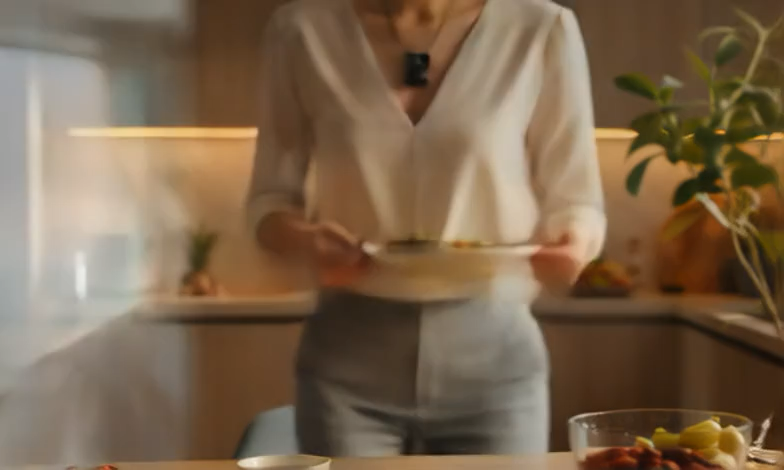

N1 is now crowdfunding! Back us today and transform your eating habits forever.
“Now I understand what I actually eat every day.”

“Effortless meal capture changed my habits.”
“The AI suggestions feel personal and actionable.”
“Weekly review became simple and visual.”
“Small insights every day, big change over time.”
“Feels like a smart mirror for my diet.”
“It explains my food patterns in plain language.”
“N1 turned confusion into confidence.”